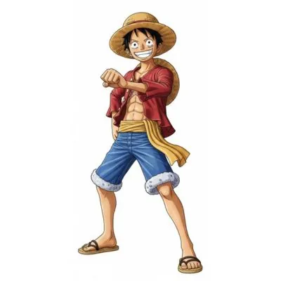
ParameciaTripulante
Monkey D. Luffy
Capitão
Luffy, o capitão dos Piratas do Chapéu de Palha, é o protagonista da série de mangá e anime One Piece.
Ver históriaSite de fã
Um guia da tripulação dos Piratas do Chapéu de Palha: os personagens, os dois navios, as Akuma no Mi e uma galeria para navegar sem parar.
Bando do Chapéu de Palha (Mugiwara no Ichimi). Escolha um card para ler a história.

ParameciaTripulante
Capitão
Luffy, o capitão dos Piratas do Chapéu de Palha, é o protagonista da série de mangá e anime One Piece.
Ver história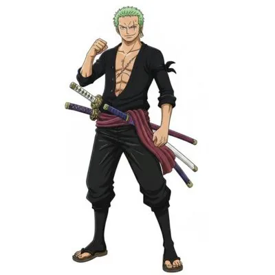
Tripulante
Espadachim
Zoro foi a primeira pessoa que Luffy recrutou para a sua tripulação e ele é o segundo membro mais forte do...
Ver história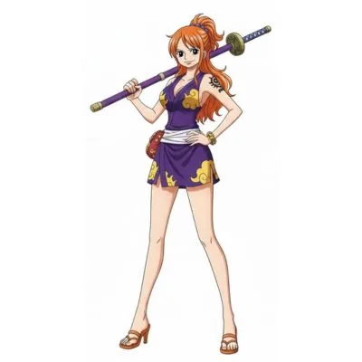
Tripulante
Navegadora
Nami é a navegadora do navio e luta usando armas, assim como Usopp, por não ter uma especialidade em combate...
Ver história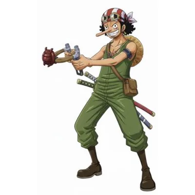
Tripulante
Atirador
Usopp também é um dos primeiros membros que entrou nos Piratas do Chapéu de Palha e ele é um dos amigos mais...
Ver história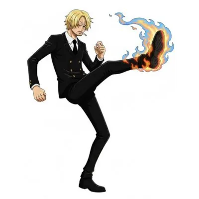
Tripulante
Cozinheiro
Sanji é um dos melhores lutadores dos Piratas do Chapéu de Palha, mas o seu papel na tripulação é de...
Ver história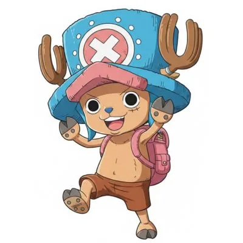
ZoanTripulante
Médico
Chopper é considerado o mascote dos Piratas do Chapéu de Palha, mas ele tem uma das funções mais importantes...
Ver história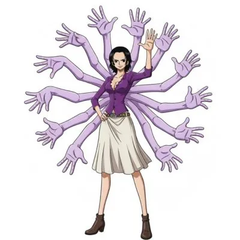
ParameciaTripulante
Arqueóloga
Robin é a arqueóloga da tripulação e um dos membros mais valiosos, já que é a única pessoa viva no mundo que...
Ver história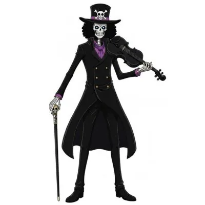
ParameciaTripulante
Músico
Brook é o músico dos Piratas do Chapéu de Palha e o membro mais velho entre eles. Ele fazia parte dos Piratas...
Ver história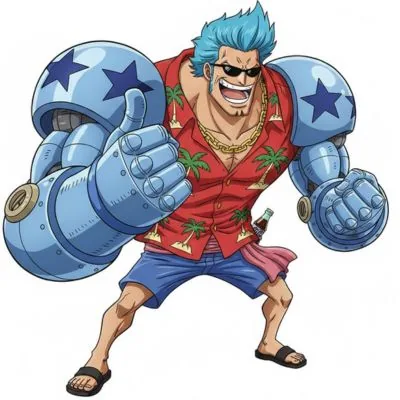
Tripulante
Carpinteiro
Franky é o carpinteiro dos Chapéus de Palha e construiu o navio Thousand Sunny para a tripulação continuar...
Ver história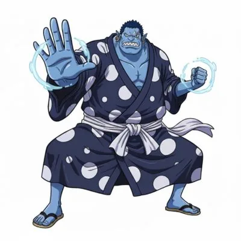
Tripulante
Timoneiro
Jinbe é o timoneiro dos Chapéus de Palha e o último membro que se juntou ao grupo até o momento. Ele conheceu...
Ver história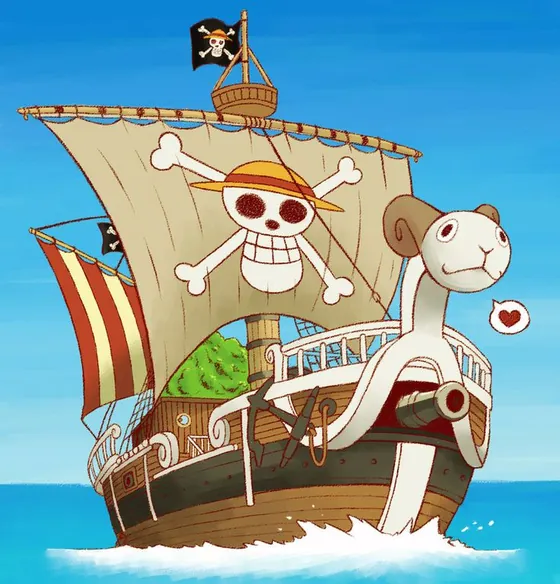
Navio
Primeiro navio do bando
O Going Merry, carinhosamente apelidado de Merry, era o navio dos Chapéus de Palha durante a primeira metade...
Ver história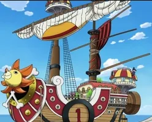
Navio
Navio atual do bando
O Thousand Sunny é o segundo navio dos Chapéus de Palha, substituindo o Going Merry depois de sua despedida...
Ver históriaAs Frutas do Diabo concedem poderes especiais a quem as come, mas cobram um preço alto: o usuário perde a capacidade de nadar.
Poderes que alteram o corpo do usuário ou criam e controlam substâncias.
Permitem ao usuário se transformar em um animal ou assumir uma forma híbrida.
Transformam o corpo do usuário em um elemento da natureza, como fogo ou gelo.
Zoan
Usuário: Tony Tony Chopper
Deu a Chopper a inteligência humana e a capacidade de assumir uma forma humana.
Paramecia
Usuário: Nico Robin
Permite que Robin faça brotar partes do corpo em qualquer superfície.
Paramecia
Usuário: Brook
Concedeu a Brook uma segunda vida, ressuscitando-o depois de morto.
Zoro, Nami, Usopp, Sanji, Franky e Jinbe não comeram nenhuma Akuma no Mi e são capazes de nadar.
Cenas do anime em rolagem contínua. Passe o mouse, use o botão ou toque em uma imagem para ampliar.
O One Piece Codex reúne em um só site três projetos de estudo que eu fiz separadamente: uma landing page, uma galeria com rolagem infinita e uma lista de personagens em React. Aqui tudo foi refeito do zero, com HTML, CSS e JavaScript puros.
prefers-reduced-motion.